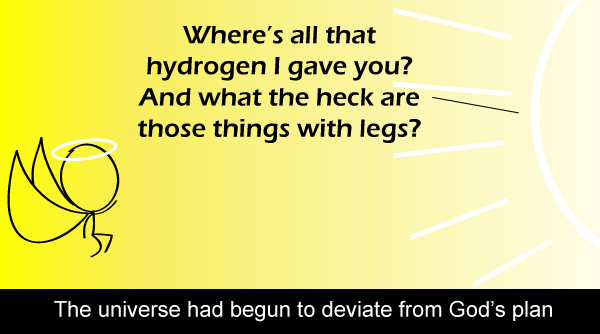

Comic JK 655
When I Feel Like It
⇤
<
?
>
⇥

⇤
<
?
>
⇥
Forum
.
RSS
.
Digg
.
Facebook
.
Reddit
.
Twitter
.
Stumbleupon
Enter your thoughts on number 655 here. Please, no spamming, trolling, or unnecessary illumination. ¶¶¶¶¶¶¶¶¶¶¶¶¶¶¶¶¶¶¶¶¶¶¶¶¶¶¶¶¶¶¶¶¶¶¶¶¶¶¶¶¶¶¶¶¶¶¶¶¶¶¶¶¶¶¶¶¶¶¶¶¶¶¶¶¶¶¶¶¶¶¶¶¶ The format still needs some work... This explains the existence of your mother, sort of. Um, my eyes hurt. <Mine too. D: >Green on black is supposed to be the LOWEST eyestrain.... >>It is. Doesn't mean everyone's used to it. >>> People with spellchecking set in other languages have red waves under every word. Now stop complaining. >>> Tweaking the font size upwards might help, especially for an 80-column display. >>> I can't help noticing that the picture doesn't follow this doctrine.. >>>>Comedy cares naught for low eyestrain. And God would look weird in green. >>>>>Especially given the context. Everyone knows hydrogen's emission alpha line is red. (A couple shades of purple, a blue, and a cyan would also fit, since they're also part of the emission spectrum.) Getting better. Buttons are about right now. >Still need to be bigger... Green = bad, especially with the yellow comic What was wrong with the old layout??? >>Although loading is faster than ever. Ooh, it's like I'm logged into a mainframe session now! >This is almost exactly the same color as my terminal text. I feel so at /home >> ijontichy@comicjk /home $ mplayer ~/memes/coolstorybro.ogg >> Isn't it "I feel so at ~"? I don't think I've ever navigated to /home. Of course, I've never had a multi-account linuxbox, so no need to navigate to any /home/<user> folders other than ~. >>>I have. Also if doing something as root (such as installing+setting up software) often I have to navigate to my home directory in order to get all the files I downloaded as non-root. (I should mention that I run a console-only linux box) > Command line rules. Unless you're illigimiate(?) What? Interesting that the comic is now a random comic button >Encourages running wild over the archives I always wondered about dark matter/energy. The only evidence we have for it is that galaxies don't act exactly how we expect, and even that is sketchy at best. There's more evidence for ghosts and psychic powers (and we all know how stupid that idea is). Of course, that doesn't stop me from including it in sci-fi stories for when I need something undetectable that can mess with stuff for no reason. > On the other hand, maps of the mass distribution of "dark matter" can be made - assuming that observed instances of gravitational lensing are just that and the light isn't being diverted for some other reason. (btw: dark matter and dark energy refer to two different concepts) >> Yes they do, but they also have little evidence to support them. Dark Matter can be done away with by any number of alternatives (such as MOND theory) and Dark Energy has even less evidence as the only reason they think it exists is that the universe seems to be expanding faster than they thought it should. (Although that then goes into all the problems they have with using red-shift to measure distances...) >>>Actually it's MOND that doesn't work. It doesn't fit all types of galaxies. It can't match with the behavior of galaxy clusters without adding dark matter in anyway. And it fails to correctly predict the CMB spectrum. Google for "dark matter just fine thanks" for a recent article posted by Discover Magazine. >>>>STVG/MOG however does work with all of that. I like this layout not quite, there is something we don't underestand, or there is some non interacting matter we don't underestand, the 2n is just better a as we put it all together in a bag, simply put all your bugs together until someone finds how to kill them dark energy is worse, the universe is accelerating NOW, why? no physical theory can come up with an aswer, which measn more work for physics :D